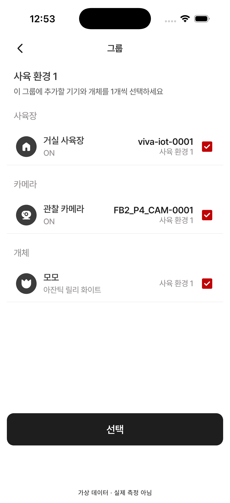

12 · 그룹 구성원 추가·변경
12 수정 방향 확인 대기 · Figma 원본과 실제 시뮬레이터 신규 캡처
수정 제안: 원본처럼 사육장·카메라·개체 목록별로 연회색 배경과 둥근 외곽을 적용합니다. 현재 앱은 흰 배경에 구분선만 표시합니다.
원본은 여러 항목의 미선택 예시이고, QA는 종류별 한 항목이 선택된 상태입니다. 항목 수·이름·체크 상태·버튼 활성 차이는 데이터에 따른 것입니다.
Figma · 393×852 12 · 시뮬레이터 · 402×874
12 · 시뮬레이터 · 402×874
검수 범위